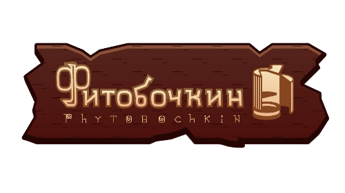

Мы занимаемся производством фитобочек из натурального горно-алтайского кедра с 2002 года. За эти годы мы
разработали технологии и создали уникальное производство, позволяющее изготавливать качественные бани-бочки,
которые придутся по вкусу самому притязательному покупателю.
В современном мире огромное количество людей предпочитают проживать в небольших городских квартирах, зачастую не
имея возможности наслаждаться банными процедурами, посещать традиционные бани или сауны. Кедровая фитобочка в
данной ситуации является лучшим решением. Бочка не только позволяет получить наслаждение от банных процедур, но и
в некоторых моментах фитобочка выигрышней традиционной бани или сауны.
Классическая фитобочка представляет из себя бочку цилиндрической формы в которую может поместиться взрослый
человек а возможно даже два, для осуществления банных процедур. Тело человека в момент банного отдыха находится в
бочке, но голова остаётся снаружи, тем самым не лишая его свежего воздуха, что действительно выигрышно отличает
фитобочку от обычной парилки.
Фитобочка работает от нагревательной установки (парогенератора). Пар подаётся...
Что такое фитобочка?
Классическая фитобочка представляет из себя бочку цилиндрической формы в которую может поместиться взрослый
человек а возможно даже два, для осуществления банных процедур. Тело человека в момент банного отдыха находится в
бочке, но голова остаётся снаружи, тем самым не лишая его свежего воздуха, что действительно выигрышно отличает
фитобочку от обычной парилки.
Плюсы фитобочки
 1.Компактный размер,позволяюший легко разместить фитобочку в квартире.
1.Компактный размер,позволяюший легко разместить фитобочку в квартире.
2.Получение удовосьствия и уникальных ошюшений от банной процедуры.
3.Эфективное воздоровление организма и поддерживания имунитета.
4.Возможность использования в качестве идеального подарка..